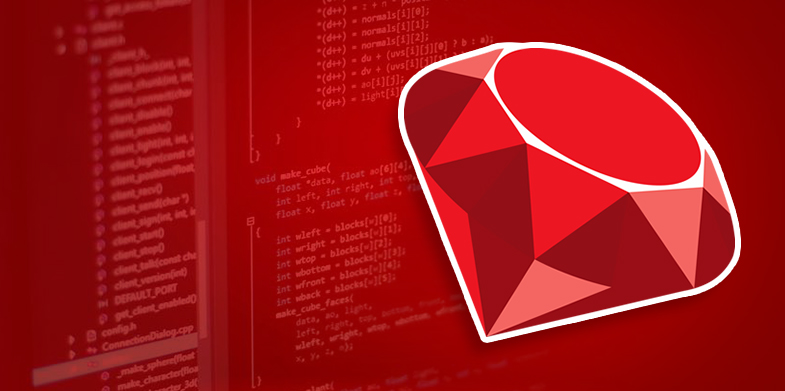

Ruby
Ruby este un limbaj de programare generic, reflexiv, dinamic și orientat pe obiecte. A fost creat la mijlocul anilor '90 din secolul trecut de Yukihiro "Matz" Matsumoto în Japonia. Combină elemente inspirate din Perl (sintaxa) cu caracteristici din Smalltalk, dar a fost influențat și de alte limbaje precum Eiffel și Lisp. Oferă suport pentru multiple paradigme de programare (funcțională, orientată pe obiecte, imperativă), gestiune automată a memoriei, sistem dinamic pentru tipurile de date; Ruby e similar - în grade diferite - cu Smalltalk, Python, Perl, Lisp, Dylan și CLU.
Este un limbaj orientat pe obiecte: fiecare tip de date este un obiect, inclusive clasele și tipurile pe care multe alte limbaje le consideră primitive (cum ar fi tipul întreg, boolean și “nil”). Fiecare funcție reprezintă o metodă. Variabilele desemnează referințe la obiecte, nu obiectele în sine. Ruby suportă moștenirea, dar nu moștenirea multiplă, totuși clasele pot importa module. Sintaza procedurală este acceptată, dar toate metodele definite în afara scopului unui obiect particular sunt de fapt metode ale clasei obiect. Din moment ce clasa este părinte pentru toate celelalte clase, schimbările devin vizibile pentru toate clasele și obiectele.
Ruby este un limbaj de o aleasă balanță. Creatorul său, Yukihiro “matz” Matsumoto, a contopit părți din limbajele sale favorite (Perl, Smalltalk, Eiffel, Ada, și Lisp) pentru a forma un nou limbaj care să creeze o balanță armonioasă între programarea funcțională și cea imperativă. El a spus adeseori că „încearcă sa facă limbajul Ruby natural, nu simplu,” într-un mod care să oglindească viața. Pornind de la aceasta, el adaugă: Ruby este simplu în aparență, dar foarte complex în interior, la fel ca și corpul uman.
Inițial, Matz s-a uitat la alte limbaje pentru a găsi sintaxa ideală. Reamintindu-și căutarile sale, el spuse: Am vrut un limbaj de tip scripting care să fie mai puternic decăt Perl, și mai orientat pe obiecte decât Python.
În Ruby, totul este un obiect. Fiecărui bit de informație și de cod i se pot da propriile proprietăți și acțiuni. În programarea orientată pe obiecte proprietățile sunt denumite variabile de instanță iar acțiunile sunt cunoscute drept metode. Natura pur orientată pe obiecte a Ruby este cel mai adesea demonstrată de o bucată de cod ce aplică o acțiune unui număr. În multe limbaje, numerele și alte tipuri de date primitive nu sunt obiecte. Ruby urmează influențele limbajului Smalltalk dând metode și variabile de instanță tuturor tipurilor sale. Aceasta ușurează utilizarea Ruby deoarece regulile aplicabile obiectelor sunt aplicabile întregului Ruby.
Încă de la lansarea sa publică în 1995, Ruby a atras programatori devotați din lumea întreagă. În 2006, Ruby a realizat acceptarea în masă prin grupuri active de utilizatori formate în orașele majore ale lumii și prin conferințe legate de Ruby în săli pline până la refuz. Ruby-Talk, principala listă de discuții pe tema limbajului Ruby a urcat până la o medie de 200 de mesaje pe zi.
Indexul TIOBE, care măsoară creșterea limbajelor de programare, situează Ruby pe locul #11 între limbajele din lumea întreagă. Observând creșterea sa, ei prezic, “Sunt mari șanse ca Ruby să intre între primele 10 limbaje în jumătate de an.” Mare parte din această creștere este atribuită programelor scrise în Ruby, în special framework-ului web Ruby on Rails. Ruby este de asemenea complet liber. Nu doar gratuit, ci de asemenea liber de a fi utilizat, copiat, modificat și distribuit.
Hituri:
-
Twitter
-
GitHub
-
Groupon
PHP
PHP este un limbaj de programare. Numele PHP provine din limba engleză și este un acronim recursiv : Php: Hypertext Preprocessor. Folosit inițial pentru a produce pagini web dinamice, este folosit pe scară largă în dezvoltarea paginilor și aplicațiilor web. Se folosește în principal înglobat în codul HTML, dar începând de la versiunea 4.3.0 se poate folosi și în mod „linie de comandă” (CLI), permițând crearea de aplicații independente. Este unul din cele mai importante limbaje de programare web open-source și server-side, existând versiuni disponibile pentru majoritatea web serverelor și pentru toate sistemele de operare. Conform statisticilor este instalat pe 20 de milioane de site-uri web și pe 1 milion de servere web. Este disponibil sub Licenṭa PHP ṣi Free Software Foundation îl consideră a fi un software liber. Inițial, limbajul a fost dezvoltat de inventatorul său, Rasmus Lerdorf. Odată cu creșterea numărului de utilizatori, dezvoltarea a fost preluată de o nouă entitate, numită The PHP Group (Grupul PHP).
PHP însemna inițial Personal Home Page. PHP a fost început în 1994 ca o extensie a limbajului server-side Perl, și apoi ca o serie de CGI-uri compilate de către Rasmus Lerdorf, pentru a genera un curriculum vitae și pentru a urmări numărul de vizitatori ai unui site. Apoi a evoluat în PHP/FI 2.0, dar proiectul open-source a început să ia amploare după ce Zeev Suraski și Andi Gutmans, de la Technion au lansat o nouă versiune a interpretorului PHP în vara anului 1998, această versiune primind numele de PHP 3.0. Tot ei au schimbat și numele în acronimul recursiv de acum, până atunci PHP fiind cunoscut ca Personal Home Page Tools. Apoi Suraski și Gutmans au rescris baza limbajului, producând astfel și Zend Engine în 1999. În mai 2000 a fost lansat PHP 4.0, având la bază Zend Engine 1.0.
PHP-ul este unul din cele mai folosite limbaje de programare server-side, conform unui studiu efectuat de Netcraft în aprilie 2002, apărând pe 9 din cele 37 milioane de domenii cercetate în studiu. De asemenea, există un grafic al creșterii folosirii PHP-ului pe site-ul oficial. Popularitatea de care se bucură acest limbaj de programare se datorează următoarelor caracteristici:
- Familiaritatea : sintaxa limbajului este foarte ușoară combinând sintaxele unora din cele mai populare limbaje Perl sau C
- Simplitatea : sintaxa limbajului este destul de liberă. Nu este nevoie de includere de biblioteci sau de directive de compilare, codul PHP inclus într-un document executându-se între marcajele speciale
- Eficiența : PHP-ul se folosește de mecanisme de alocare a resurselor, foarte necesare unui mediu multiutilizator, așa cum este web-ul
- Securitate : PHP-ul pune la dispoziția programatorului un set flexibil și eficient de măsuri de siguranță
- Flexibilitate : fiind apărut din necesitatea dezvoltării web-ului, PHP a fost modularizat pentru a ține pasul cu dezvoltarea diferitelor tehnologii. Nefiind legat de un anumit server web, PHP-ul a fost integrat pentru numeroasele servere web existente: Apache, IIS, Zeus, server, etc
- Gratuitate : este probabil cea mai importantă caracteristică a PHP-ului. Dezvoltarea PHP-ului sub licența open-source a determinat adaptarea rapidă a PHP-ului la nevoile web-ului, eficientizarea și securizarea codului
PHP este simplu de utilizat, fiind un limbaj de programare structurat, ca și C-ul, Perl-ul sau începând de la versiunea 5 chiar Java, sintaxa limbajului fiind o combinație a celor trei. Datorită modularității sale poate fi folosit și pentru a dezvolta aplicații de sine stătătorare, de exemplu în combinație cu PHP-GTK sau poate fi folosit ca Perl sau Python în linia de comandă. Probabil una din cele mai importante facilități ale limbajului este conlucrarea cu majoritatea bazelor de date relaționale, de la MySQL și până la Oracle, trecând prin MS Sql Server, PostgreSQL, sau DB2.
PHP poate rula pe majoritatea sistemelor de operare, de la UNIX, Windows, sau Mac OS X și poate interacționa cu majoritatea serverelor web. Codul dumneavoastră PHP este interpretat de serverul WEB și generează un cod HTML care va fi văzut de utilizator (clientului -browserului- fiindu-i transmis numai cod HTML).
Arhitectura tip LAMP a devenit populară în industria web ca modalitate rapidă, gratuită și integrată de dezvoltare a aplicațiilor. Alături de Linux, Apache și Mysql, PHP reprezintă litera P, deși uneori aceasta se referă la Python sau Perl. Linux ocupă rolul de sistem de operare pentru toate celelalte aplicații, MySQL gestionează bazele de date, Apache are rol de server web, iar PHP are rol de interpretator și comunicator între acestea.
Hituri:
-
Facebook
-
WordPress
-
Wikipedia
Java
Java este un limbaj de programare orientat-obiect, puternic tipizat, conceput de către James Gosling la Sun Microsystems (acum filială Oracle) la începutul anilor ʼ90, fiind lansat în 1995. Cele mai multe aplicații distribuite sunt scrise în Java, iar noile evoluții tehnologice permit utilizarea sa și pe dispozitive mobile gen telefon, agenda electronică, palmtop etc. În felul acesta se creează o platformă unică, la nivelul programatorului, deasupra unui mediu eterogen extrem de diversificat. Acesta este utilizat în prezent cu succes și pentru programarea aplicațiilor destinate intranet-urilor.
Limbajul împrumută o mare parte din sintaxă de la C și C++, dar are un model al obiectelor mai simplu și prezintă mai puține facilități de nivel jos. Un program Java compilat, corect scris, poate fi rulat fără modificări pe orice platformă care e instalată o mașină virtuală Java (engleză Java Virtual Machine, prescurtat JVM). Acest nivel de portabilitate (inexistent pentru limbaje mai vechi cum ar fi C) este posibil deoarece sursele Java sunt compilate într-un format standard numit cod de octeți (engleză byte-code) care este intermediar între codul mașină (dependent de tipul calculatorului) și codul sursă.
Mașina virtuală Java este mediul în care se execută programele Java. În prezent, există mai mulți furnizori de JVM, printre care Oracle, IBM, Bea, FSF. În 2006, Sun a anunțat că face disponibilă varianta sa de JVM ca open-source.

Există 4 platforme Java furnizate de Oracle:
- Java Card - pentru smartcard-uri (carduri cu cip)
- Java Platform, Micro Edition (Java ME) — pentru hardware cu resurse limitate, gen PDA sau telefoane mobile
- Java Platform, Standard Edition (Java SE) — pentru sisteme gen workstation, este ceea ce se găsește pe PC-uri
- Java Platform, Enterprise Edition (Java EE) — pentru sisteme de calcul mari, eventual distribuite
Hituri:
-
eBay
-
LinkedIn
-
Amazon
JavaScript
JavaScript (JS) este un limbaj de programare orientat obiect bazat pe conceptul prototipurilor. Este folosit mai ales pentru introducerea unor funcționalități în paginile web, codul JavaScript din aceste pagini fiind rulat de către browser. Limbajul este binecunoscut pentru folosirea sa în construirea siturilor web, dar este folosit și pentru accesul la obiecte încastrate (embedded objects) în alte aplicații. A fost dezvoltat inițial de către Brendan Eich de la Netscape Communications Corporation sub numele de Mocha, apoi LiveScript, și denumit în final JavaScript.
În ciuda numelui și a unor similarități în sintaxă, între JavaScript și limbajul Java nu există nicio legătură. Ca și Java, JavaScript are o sintaxă apropiată de cea a limbajului C, dar are mai multe în comun cu limbajul Self decât cu Java.
Până la începutul lui 2005, ultima versiune existentă a fost JavaScript 1.5, care corespunde cu Ediția a 3-a a ECMA-262, ECMAScript, cu alte cuvinte, o ediție standardizată de JavaScript. Versiunile de Mozilla începând cu 1.8 Beta 1 au avut suport pentru E4X, care este o extensie a limbajului care are de a face cu XML, definit în standardul ECMA-357. Versiunea curentă de Mozilla, 1.8.1 (pe care sunt construite Firefox și Thunderbird versiunile 2.0) suportă JavaScript versiunea 1.7.

Schimbarea numelui din LiveScript în JavaScript s-a făcut cam în același timp în care Netscape încorpora suport pentru tehnologia Java în browserul web Netscape Navigator. Microsoft a implementat limbajul JavaScript sub numele de JScript, cu o serie de modificări și extensii față de implementarea Netscape. Pe platforma Windows, JScript este unul din limbajele executabile de către Windows Script și, deci, poate fi folosit pentru scriptarea aplicațiilor ce suportă Windows Script, de exemplu Internet Explorer, sau chiar sistemul de operare Windows. Asociația ECMA a standardizat limbajul JavaScript/JScript sub numele ECMAScript (standardul ECMA-262)
Cea mai des întâlnită utilizare a JavaScript este în scriptarea paginilor web. Programatorii web pot îngloba în paginile HTML script-uri pentru diverse activități cum ar fi verificarea datelor introduse de utilizatori sau crearea de meniuri și alte efecte animate.
Browserele rețin în memorie o reprezentare a unei pagini web sub forma unui arbore de obiecte și pun la dispoziție aceste obiecte script-urilor JavaScript, care le pot citi și manipula. Arborele de obiecte poartă numele de Document Object Model sau DOM. Există un standard W3C pentru DOM-ul pe care trebuie să îl pună la dispoziție un browser, ceea ce oferă premiza scrierii de script-uri portabile, care să funcționeze pe toate browserele. În practică, însă, standardul W3C pentru DOM este incomplet implementat. Deși tendința browserelor este de a se alinia standardului W3C, unele din acestea încă prezintă incompatibilități majore, cum este cazul Internet Explorer.
O tehnică de construire a paginilor web tot mai întâlnită în ultimul timp este AJAX, abreviere de la „Asynchronous JavaScript and XML”. Această tehnică constă în executarea de cereri HTTP în fundal, fără a reîncărca toată pagina web, și actualizarea numai anumitor porțiuni ale paginii prin manipularea DOM-ului paginii. Tehnica AJAX permite construirea unor interfețe web cu timp de răspuns mic, întrucît operația (costisitoare ca timp) de încărcare a unei pagini HTML complete este în mare parte eliminată.
Hituri:
-
PayPal
-
Majoritatea interfețelor site-urilor